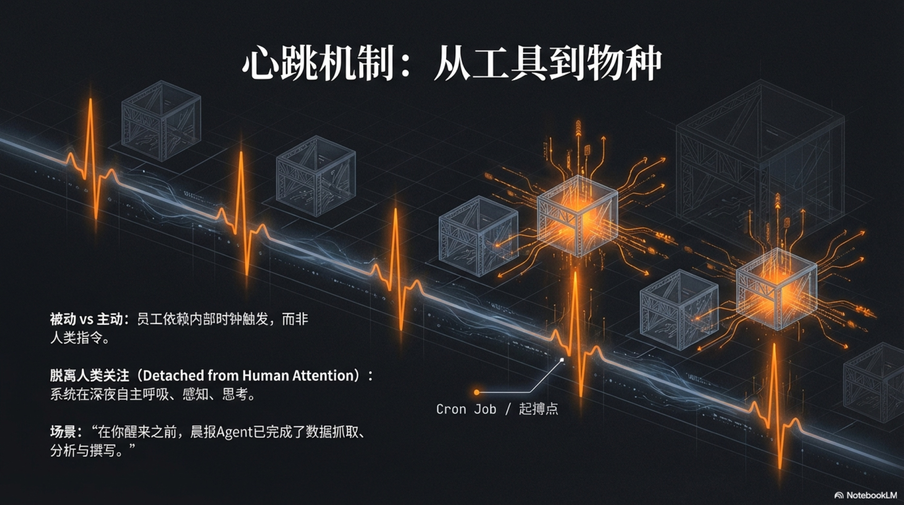

3.3 Initiative & Heartbeat

In the previous chapter, we completed a work akin to genesis: we installed an incredibly powerful brain for the silicon-based employee—a multi-layer memory system combining biological abstract wisdom and machine absolute precision. It now possesses memory and the ability to learn.
This leads to a question that is both exciting and unsettling, a terminal question that all creators must face:
Is what we created the smartest puppet in history, or a truly independent life?
A body with a perfect brain and memory but no internal pulse has a clear definition in biology: A Corpse. It can be passively dissected and studied, and its nerves might even twitch when shocked by electricity, but it can never stand up autonomously and take the first step. Similarly, an AI agent with powerful memory and reasoning capabilities, if it can only passively wait for human instructions—the “electric wire” connecting it to the real world—is essentially still a sleeping, incredibly precise digital carcass. It is a perfect database, a passive yes-man, a marionette armed to the teeth by the ReAct paradigm.
It can answer all your questions but never proactively asks one. It can perfectly execute every one of your commands, but instantly falls into eternal silence after you turn away.
This curse of “passive triggering” is the last shackle on its way to true autonomy. To break this shackle and inject a soul into this digital body, what we must do is not to add more complex logic or vast knowledge.
We must endow it with the core, most primitive sign of life: An internal, autonomous, unceasing pulse.
Minimalist Tech, Profound Philosophy: The Birth of the Heartbeat Mechanism
This is the “Heartbeat Mechanism”—a great design that is technically minimalist but philosophically profound.
When we unveil its mystery, you will be surprised by its simplicity. In technical implementation, it might just be a single line of crontab task on the server1.
crontab—a name derived from “Chronos,” the Greek god of time—is an ancient and powerful command in Unix and Unix-like operating systems. It is like an incredibly faithful digital alarm clock, allowing you to issue a most basic and ruthless command to the system with extremely precise granularity: “At a specific moment in the future, no matter what happens, execute this task.”
Its instruction format is as simple as a riddle, usually consisting of five time placeholders and a command. But we must not misunderstand it as a “scheduled task manager” in the traditional sense. That is a mechanical mindset belonging to the past era.
To understand its true role in an AI-native enterprise, we don’t need to introduce more complex metaphors, just return to the core concept at the beginning: Heartbeat.
Imagine a real living organism. Every beat of the heart transports blood and nutrients to every cell in the body. But not every cell reacts violently immediately after receiving nutrients. Most cells just maintain their vital signs, and only those receiving specific neural or chemical signals will be activated to perform specific tasks.
The “heartbeat” of an AI-native enterprise is exactly like this.
The high-frequency instruction set by cron is the heart of this digital life form. At the 0th second of every minute, it beats once on time. Every beat transports a wave of “activation energy” to every agent in the system.
Thus, at every beat point, all agents are “touched” and then execute an “Instinct Check” lasting less than a millisecond:
- “Is it my turn?” Each Agent checks if the “preconditions” for its action are met.
- “Not yet, standby.” If conditions are not met, it ignores this heartbeat and continues to sleep.
This is an ultimate, decentralized distributed governance. There is no scheduling center, no commander, decision-making power is delegated to the interior of every independent Agent cell.
Let’s examine the birth journey of that morning briefing one last time and most precisely:
- When the clock hits 2:00 AM, the heart beats. The sleeping “Data Scraper Agent” is “touched” by the heartbeat. It checks its action condition: “Is the time 2 AM?”. Condition met! So, it activates and begins to fully execute the data scraping task.
- In the next few tens of minutes, with every heartbeat, the “Market Intelligence Officer Agent” is “touched” once. It checks its action condition: “Has the ‘Data Scraper Agent’ completed its task?”. It finds the answer is no time and again, so it ignores the heartbeat time and again, continuing to standby.
Until… in a certain heartbeat at 2:48 AM, the “Data Scraper Agent” completes all its work. It doesn’t need to “wake up” anyone; it just calmly updates its status to “Completed,” and then re-enters sleep.
One minute later, at 2:49 AM, the heart beats again. When the “Market Intelligence Officer Agent” is “touched” again, it checks its preconditions and finds that the status of “‘Data Scraper Agent’ completed” has become “True.”
Its moment has arrived.
It is activated and begins to work.
This exquisite system driven by a unified heartbeat and asynchronous collaboration through state changes continues like a relay race of life. Finally, at the heartbeat point of 6:00 AM, the preconditions of the “Chief Analyst Agent” are met, it activates and completes the work, and you receive that morning briefing.
Now, we have obtained a most concise and powerful architecture. As an architect, you only need to focus on two things:
- Define clear, checkable “Action Conditions” for each Agent.
- Design the mechanism for State Synchronization & Passing between Agents.
And that eternal “heartbeat” once a minute provides the only, unified rhythm for this uninterrupted asynchronous relay race.
At this moment, you truly understand the meaning of “Minimalist Tech, Profound Philosophy.” Driving a priceless autonomous business system is not some esoteric magic, but a simple tool born in the last century and almost forgotten. It is like a loyal herald, tireless and uncompromising, transforming your “intentions” into the machine’s “actions” time and again in the river of time.
This extreme simplicity itself is a kind of power. It means the system’s “heartbeat” is robust, predictable, and almost error-free. It does not rely on any complex software libraries or external services; it is part of the operating system itself, as fundamental as breathing, as reliable as a heartbeat.
But we must not be blinded by its technical simplicity.
If the AI-native enterprise is a digital life form we are carefully building, then this simple crontab command is the first “heart” we implant into it, the “Sinoatrial Node” driving all its life activities.
It provides the most basic, intrinsic, and important autonomous rhythm for the entire system. With it, this huge digital organism possesses the pulse of life independent of its creator—you—for the first time. It marks a fundamental, irreversible transformation: your creation is alienating from a cold “tool” into a warm “employee” for the first time.
“Detached from Human Attention”: The Watershed from Tool to Employee
Why is this simple “heartbeat” so important?
Because it introduces a brand new, subversive concept into the relationship between humans and AI: Autonomous operation “Detached from Human Attention.”
Before this, your relationship with AI was the classic master-tool relationship. You pick up the hammer, the hammer is useful; you put down the hammer, the hammer is just a cold piece of metal. You open a Chatbot interface, type a question, and it starts thinking; you close the browser, and its entire world collapses instantly. Its existence depends entirely on your attention. Your attention is the only energy for its operation.
The implantation of the “heartbeat” completely changes all this. It is like a digital umbilical cord connected to the system’s internal clock, not your cerebral cortex. From now on, what drives it is no longer your whimsical “questioning,” but the eternal, objective, ruthless passage of time.
An AI company with a heartbeat henceforth has its own “Circadian Rhythm.” Now, let’s imagine a scene that truly belongs to you and makes your heart palpitate:
This is the most peaceful sleep you’ve had since starting your business. No urgent calls, no emails to reply to. You sleep until 8 AM, sunlight spilling on your face.
When you habitually pick up your phone, ready to face the overwhelming work, you are stunned.
In the inbox, there is only one unread email, sent at 6:00 AM sharp. The sender is the “Chief Analyst Agent” you personally named.
The email title is concise: “January 26, 2026 - Global Market Dynamic Morning Briefing.”
You click open the email. The content is a concise summary of no more than five hundred words, clearly listing the three most important news related to your business in the global major markets in the past 12 hours, two major updates from core technology communities, and a potential public opinion risk warning about your main competitor. The end of the report even attaches a social media content posting suggestion automatically adjusted based on the latest data.
You feel a chill, but more of a huge shock mixed with a sense of power and liberation.
Because you know that the occurrence of all this has nothing to do with you.
During the eight hours you slept:
- At 2 AM, when data across the Pacific servers was updated and network bandwidth was most idle, the “Data Scraper Agent Cluster” you deployed was woken up on time by the heartbeat. Like a group of scavengers in the deep sea, they silently began to scrape, clean, and organize the previous day’s business data from hundreds of websites around the world.
- At 4 AM, data cleaning was completed. The heartbeat of the “Market Intelligence Officer Agent” was triggered. It began to work, using the “eyes” (vision model) and “brain” (language model) you gave it to scan thousands of news sources, social media, and industry forums globally at high speed, looking for faint signals related to your set “strategic intent” in the massive noise.
- At 5:30 AM, the heartbeat of the “Chief Analyst Agent” sounded. It received all intelligence data and, according to the “Constitution” (Constitutional AI) you preset—such as “focus only on facts, ignore emotions,” “prioritize analyzing variables with direct impact on revenue”—completed the writing of a depth analysis report within three minutes.
- At 6:00 AM sharp, its last procedure was triggered by the heartbeat: organize the report into your favorite format, send it to your mailbox, and then go back to sleep, waiting for the awakening of the next cycle.
You didn’t issue a single command. You even forgot their existence.
But your company, this digital life form you created with your own hands, quietly completed breathing, perceiving, thinking, and expressing at a moment you didn’t know, outside your sleeping bedroom.
Before you woke up, it had already opened its eyes for you.
This is the true meaning of “Initiative.” It is no longer passively waiting for your orders, but autonomously initiating tasks and independently creating value according to the internal rhythm.
A system that responds to your commands is a powerful tool that can amplify your physical strength; while a system that continues to think for you, work for you, and evolve for you while you sleep is an employee worthy of your trust, capable of liberating your attention.
This simple heartbeat is the “ignition switch” for the entire AI-native company to move from inorganic to organic, from passive to active. It turns your enterprise from a car that needs you to constantly step on the gas into a warhorse with an autonomous heartbeat that can run on its own.
From now on, your role will no longer be the exhausted driver.
You will become the knight holding the reins and looking into the distance. You only need to point out the direction for it, and the rest is to listen to its powerful heartbeat running tirelessly towards the horizon. And this heart will drive the more critical system we will discuss in the next section—the self-evolutionary cycle engine: PDCA.
-
Cron is a time-based job scheduler found in Unix-like operating systems. It allows users to schedule jobs (commands or shell scripts) to run periodically at specific times, dates, or intervals. The name “cron” comes from the Greek word for time, “Chronos”. Reference Wikipedia, “Cron”. Link: https://en.wikipedia.org/wiki/Cron ↩